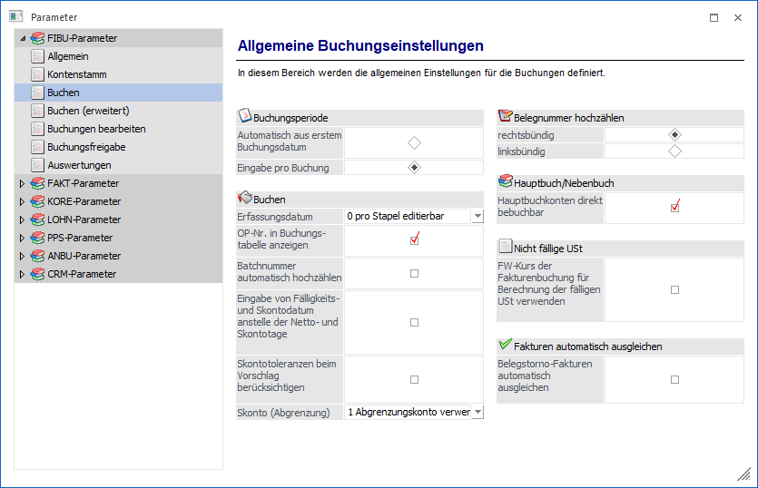
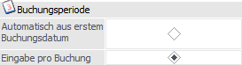
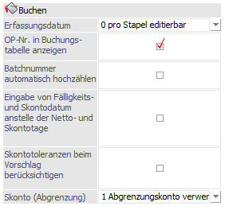
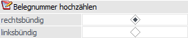
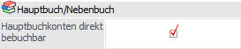
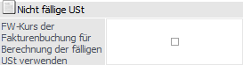
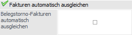

Über den Bereich "FIBU-Parameter - Buchen" können allgemeine Einstellungen für das Buchen vorgenommen werden.
Hinweis
Standardmäßig wird das Fenster in einem "Lesemodus" geöffnet, d.h. es können die bestehenden Einstellungen kontrolliert, Änderungen allerdings nicht durchgeführt werden. Hierfür muss zunächst mit Hilfe des Buttons "Bearbeiten" der "Bearbeitungsmodus" aktiviert werden. Alternativ kann diese Aktivierung auch über das Kontextmenü der rechten Maustaste (Funktion "Applikation xxx bearbeiten") erfolgen.

Buchungsperiode

Beim Buchen Dialog Stapel in der WinLine FIBU gibt es zwei Möglichkeiten, wie die Buchungsperiode verwendet werden soll:
ü Automatisch aus erstem
Buchungsdatum
Bei dieser Option wird die Buchungsperiode aus dem ersten
eingegebenen Buchungsdatum abgeleitet, danach werden alle innerhalb des Stapels
erfassten Buchungen in die gleiche Periode gebucht.
ü Eingabe pro Buchung
Mit dieser
Einstellung wird die Buchungsperiode bei jeder Buchung neu ermittelt - es können
in einem Stapel auch mehrere Perioden verwendet werden.
Hinweis
Auch wenn die Option "Eingabe pro Buchung" eingestellt ist, muss für EB- und AB-Buchungen ein extra Stapel verwendet werden.
Buchen

Ø Erfassungsdatum
Für das Erfassungsdatum in Buchungsstapeln kann aus den folgenden Optionen gewählt werden:
ü pro Stapel editierbar
Im Buchen
kann ein Erfassungsdatum pro Stapel hinterlegt werden.
ü pro Buchung editierbar
Das
Erfassungsdatum kann pro Buchungszeile verändert werden.
ü nicht editierbar
Als
Erfassungsdatum wird das Login-Datum pro Buchungszeile herangezogen und kann
nicht editiert werden.
Hinweis zum EXIM
Diese Funktion wird ebenso im Menüpunkt "Buchungsstapel-EXIM" unterstützt. D.h. wird die Option "Erfassungsdatum pro Buchung editierbar" aktiviert, so wird das Erfassungsdatum pro Zeile gespeichert und auch so in der Tabelle angezeigt (und ins Journal geschrieben). Wird kein Erfassungsdatum importiert, so wird das entsprechende Buchungsdatum verwendet.
Ist die Option nicht aktiviert, so wird falls in der Importdatei ein Erfassungsdatum hinterlegt ist, für den gesamten Stapel das Erfassungsdatum der ersten Buchung verwendet. Wird kein Erfassungsdatum importiert, so wird das Tagesdatum für die Buchungen verwendet.
Ø OP-Nr. in Buchungstabelle anzeigen
Wird diese Checkbox aktiviert, dann gibt es in den Buchungsprogrammen eine neue, eigene Spalte für die OP-Nummer, welche auch unabhängig von der Belegnummer bearbeitet werden kann. Folgende Änderungen ergeben sich dadurch beim Buchen:
ü Die Belegnummer und die OP-Nummer (Fakturennummer) können unterschiedlich sein, grundsätzlich wird die OP-Nummer aber von der Belegnummer vorgeschlagen.
ü Wird die OP-Nummer nachträglich in der Buchungszeile (DF/KF) geändert, wird die OP neu erstellt.
ü Wird bei Zahlungen (DZ/KZ) im Feld "OP-Nummer" eine Rechnungsnummer eingetragen, so wirkt das wie ein Matchcode, d.h. die eingetragene Faktura wird auch gleich zur Zahlung vorgeschlagen, ohne dann man eine Auswahl treffen muss.
Ø Batchnummer automatisch hochzählen
In den Buchungsprogrammen gibt es die Möglichkeit, eine Batchnummer zu hinterlegen. Diese Batchnummer wird auch benutzerspezifisch in allen Buchungsprogrammen gespeichert. Damit kann festgestellt werden, wer welche Buchungen abgesetzt hat. Durch aktivieren der Option "Batchnummer automatisch hochzählen" wird erreicht, dass praktisch jeder Buchungsvorgang eine eigene Buchungsbatchnummer erhält.
Hinweis
Die Buchungsbatchnummer kann pro Buchungsvorgang überschrieben werden.
Ø Eingabe von Fälligkeits- und Skontodatum anstelle der Netto- und Skontotage
Wird diese Option aktiviert so stehen anstelle der Eingabemöglichkeiten für Skonto- und Nettotage entsprechende Datums-Eingabefelder zur Verfügung in denen das Fälligkeitsdatum, das Skontodatum 1 sowie das Skontodatum 2 eingegeben werden können.
Ø Skontotoleranzen beim Vorschlag berücksichtigen
Beim Buchen einer Zahlung und im Zahlungsverkehr werden bei Aktivierung der Checkbox auch die Toleranztage und der Toleranzprozentsatz der jeweiligen Zahlungskondition, die im Personenkonto hinterlegt ist, berücksichtigt. Der Toleranzprozentsatz wird dabei zu den Skontoprozenten addiert, die Toleranztage erhöhen die Skontofrist.
Im Zahlungsverkehr werden die Skonto-Toleranztage aus der Zahlungskondition nicht mehr direkt für den Zahlungsvorschlag berücksichtigt. Die Toleranztage werden als Ersatz für bzw. Verlängerung der im Zahlungsverkehr eingegebenen Karenztage verwendet.
Ø Skonto (Abgrenzung)
Wird bei einer Faktura die Funktion des Abgrenzungskontos / Leistungsdatums verwendet, stehen für die Skontobuchungen folgende Optionen zur Verfügung:
ü 0 - Skontoerlöskonto/Skontoaufwandskonto verwenden
ü 1 - Abgrenzungskonto verwenden, wenn für die Faktura ein Leistungsdatum eingegeben wurde
ü 2 - Abgrenzungskonto verwenden, wenn auch für die Faktura das Abgrenzungskonto verwendet wurde
Belegnummer hochzählen

Durch Setzen des Radiobuttons kann festgelegt werden, wie das Hochzählen der Belegnummer (z.B. im Dialog-Stapel-Buchen, Dialog-Stapel-Buchen-Quick, Zahlungsmittelkonten-Buchen, Dialogbilanz, usw.) erfolgen soll, sofern kein hochzählender Nummernkreis verwendet wird:
ü rechtsbündig
Wird im Feld
"Belegnummer" die "+"-Taste gedrückt so wird rechtsbündig hochgezählt. D.h.
steht im Feld "Belegnummer" die Nr. 4711/04 wird anschließend daraus
4711/05.
ü linksbündig
Wird im Feld
"Belegnummer" die "+"-Taste gedrückt so wird linksbündig hochgezählt. D.h. steht
im Feld "Belegnummer" die Nr. 4711/04 wird anschließend daraus 4712/04.
Hauptbuch/Nebenbuch

Ø Hauptbuchkonten direkt bebuchbar
Mit dieser Checkbox kann das direkte Bebuchen von Hauptbuchkonten unterbunden werden. Die Checkbox ist standardmäßig gesetzt und kann nur deaktiviert werden, wenn kein Hauptbuchkonto:
ü im Soll oder Haben direkt bebucht wurde
ü als USt-Konto bzw. VSt-Konto in einer Steuerzeile eingetragen wurde
ü als FW-Differenz-Erlöskonto bzw. FW-Differenz-Aufwandskonto in einer FW eingetragen wurde
ü als FIBU-Konto im Bankenstamm eingetragen wurde
ü als Abgrenzungskonto in den FIBU-Parametern verwendet wurde
Auch in den entsprechenden Stammdaten-Fenstern gibt es diese Prüfungen, d.h. wenn die Checkbox deaktiviert ist, kann kein Hauptbuchkonto:
ü als USt- oder VSt-Konto bei einer Steuerzeile eingetragen werden
ü als FW-Differenz-Erlöskonto bzw. FW-Differenz-Aufwandskonto bei einer FW eingetragen werden
ü als Fibu-Konto im Bankenstamm eingetragen werden
ü als Abgrenzungskonto in den FIBU-Parametern eingetragen werden
Bei deaktivierter Checkbox ist es nicht möglich, ein Hauptbuchkonto in einem Buchungsfenster direkt zu bebuchen, d.h. in diesem Fall wird eine Fehlermeldung ausgegeben und die Eingabe abgelehnt. Die Prüfung erfolgt in den Buchungsfenstern sowohl beim manuellen Erfassen einer Buchung, als auch beim Buchen eines geladenen Stapels. So werden auch jene Buchungen geprüft, die z.B. von einer anderen Applikation erzeugt oder mittels EXIM in die FIBU importiert wurden.
Nicht fällige USt

Ø FW-Kurs der Fakturenbuchung für Berechnung der fälligen USt verwenden
Diese Option (standardmäßig deaktiviert) wird beim Buchen eines Stapels berücksichtigt, d.h. wenn die Checkbox gesetzt ist, wird für die Berechnung des umgebuchten Steuerbetrags für nicht fällige Steuerzeilen nicht der LW-Zahlungsbetrag verwendet, stattdessen wird der mit dem Kurs der Fakturenbuchung umgerechnete FW-Zahlungsbetrag verwendet. Dies passiert nur, wenn die Zahlung in FW gebucht wurde und diese mit der FW der Fakturenbuchung übereinstimmt und wenn sowohl der LW-Betrag der Fakturenbuchung und der FW-Betrag der Fakturenbuchung, als auch der FW-Betrag der Zahlungsbuchung, ungleich 0 ist.
Fakturen automatisch ausgleichen

Ø Belegstorno-Fakturen automatisch ausgleichen
Ist die Option aktiviert, wird beim Belegstorno die ursprüngliche Belegnummer mit angehängtem ""-"" als Fakturennummer in die OP-Tabelle des FAKT-Buchungsstapels übernommen. Existiert bei einem Personenkonto ein OP mit einem ""-"" am Ende und ein entsprechender OP ohne ""-"" am Ende, werden diese beiden OPs automatisch gegeneinander ausgeglichen, wenn die Beträge übereinstimmen.
Ist die Option deaktiviert, so wird beim Belegstorno die eigentliche Belegnummer (Rechnungsnummer) als Fakturennummer in die OP-Tabelle des FAKT-Buchungsstapels übernommen.
Hinweis
Ist die Option "Buchungen nachträglich bearbeiten" aktiviert, so können diese beiden Buchungen (Faktura und Storno der Faktura) nicht mehr bearbeitet werden. Ein Buchungsstorno ist nur bei festgeschriebenen Buchungen möglich.
Die Vergabe der neuen Belegnummer in der FAKT und in der FIBU-Buchung bleibt beim Belegstorno unverändert.